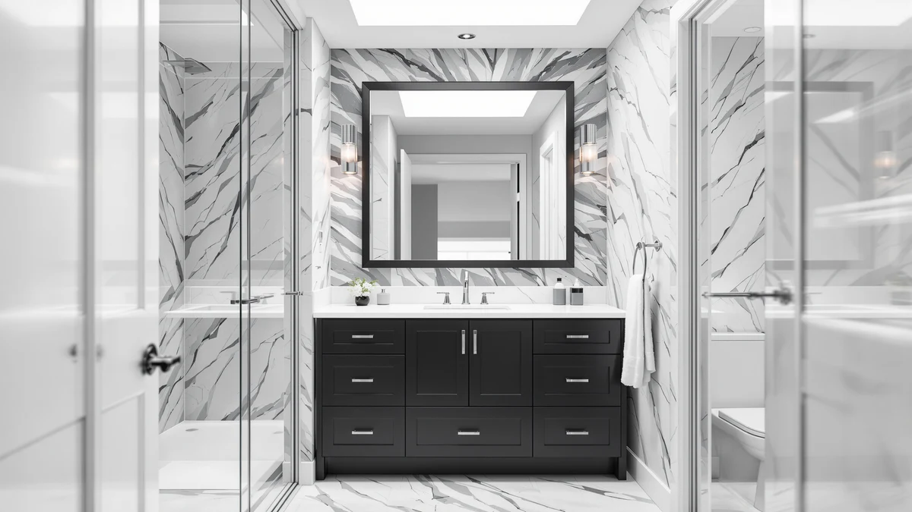

The Best Black Vanity Cabinets (2026)
Prices and picks verified as of August 2026. Independent, reader-supported reviews.


Quick Answer
The best black vanity cabinets balance real storage with a finish that resists water spotting and fingerprints, and the 30-Inch Bathroom Vanity with Sink hits that mark at $164.97 with a soft-close door and a pre-installed sink. Want more width or a decorative front? The ANGRYWIN 31-Inch Fluted vanity adds texture for $259.99, and the Double Bathroom Vanity with Sink covers a 59-inch double-sink layout at $409.99.
Our pick: 30" Bathroom Vanity with Sink — $164.97 Check Price on Amazon
Bottom line: our top pick is the 30" Bathroom Vanity with Sink at $199.95. The best budget option is the REDAYFUR Under Sink Bathroom Cabinet with U-Shape Cut-Out at $89.99.
Things to Know Before You Buy
- Our pick for the best black vanity cabinets is the 30-Inch Bathroom Vanity with Sink ($164.97). It pairs a pre-installed ceramic sink with a soft-close door, and it's the cheapest way into this list.
- Almost every cabinet here is MDF or engineered wood, not solid hardwood, so how the finish is sealed matters more than the wood species underneath.
- Size ranges from a compact 24 inches to a 59-inch double-sink unit, so measure your alcove before you compare prices.
- Review counts vary widely, from 30 verified ratings on our top pick down to newer listings with only a handful. Fewer reviews isn't a red flag on its own, but it does mean less of a track record to lean on.
- A matte black finish hides water spots and fingerprints better than a glossy one, which matters most in a bathroom more than one person shares.
The best black vanity cabinets do two things most white or oak units don't: they hide water spots and toothpaste smears between cleanings, and they anchor a bathroom with a look that reads more expensive than the price tag suggests. A matte black finish in particular hides fingerprints better than a glossy one, which matters if more than one person shares the sink. We looked at seven black vanity cabinets currently sold on Amazon, from a compact 24-inch single-sink unit to a 59-inch double-sink cabinet, and compared their construction, hardware and verified owner feedback.
Most of these cabinets share the same bones: MDF or engineered wood cores finished in a painted or laminate black, with a sink either pre-installed or sold separately. The differences that matter show up in the hardware, drawer construction and how the finish holds up to daily splashing. A cabinet with exposed particleboard edges swells and peels within a year in a humid bathroom, while a sealed MDF cabinet with a soft-close hinge outlasts the room's next two paint jobs.
For most bathrooms, the 30-Inch Bathroom Vanity with Sink is the one to buy first: it pairs a ceramic sink with a soft-close door at a price that undercuts most of the field. If your bathroom is wider or you need two sinks, the picks below cover both, along with a budget option under $175 and a fluted, more decorative alternative for a primary bathroom remodel.
Why You Should Trust Us
Best Bathroom Vanities is an independent research site. Ilane Tall, our home and bath editor, has spent years covering black vanity cabinets and other bathroom renovation hardware for this site, and she leads the sourcing and comparison work behind every guide we publish.
We do not run a fake testing lab, and we don't claim to have physically installed every cabinet in this guide. Instead, we compare manufacturer specifications, published dimensions and pricing, and we read through verified owner reviews on Amazon to flag recurring complaints about hardware, finish and shipping damage. When a listing lacks enough verified reviews to draw a conclusion, we say so rather than guess.
How We Picked
We started with every black vanity cabinet in our product database that ships with a sink or is explicitly sold as a vanity cabinet, then narrowed the list using four filters: finish (black, matte or semi-gloss, not merely a dark wood tone), documented dimensions, price under $450, and enough listing detail to verify what's actually included, cabinet only, cabinet plus sink, or cabinet plus faucet.
We excluded standalone cabinets with no published material specs and any listing where the black finish only appeared on the countertop rather than the cabinet body. That left the seven cabinets in this guide, covering single-sink units from 24 to 32 inches and one 59-inch double-sink cabinet.
How We Compared
We compared these black vanity cabinets on published materials and construction, cabinet dimensions against typical bathroom alcove widths, included hardware such as soft-close hinges and drawer glides, and price per inch of cabinet width. Where Amazon lists a rating and review count, we read a sample of the verified reviews looking for repeated complaints, chipped edges, missing hardware, sink leaks, rather than one-off comments.
We also checked whether each listing includes a sink, faucet holes or a pre-drilled countertop, since two cabinets at a similar price can differ by hundreds of dollars in what you still need to buy separately.
Our Picks
These seven cabinets are the best black vanity cabinets we found once we weighed price, materials and the review history documented on each listing.

30" Bathroom Vanity with Sink
What we like
- Comes with a sink pre-installed, so there's no separate countertop to source
- Soft-close door hinges keep the cabinet quiet and prevent slamming
- At $164.97 it's one of the least expensive black vanities in this guide
- 4.5 out of 5 across 30 verified ratings, the strongest review record here
Flaws but not dealbreakers
- 30 inches wide, so it won't suit a primary bathroom that needs more counter space
- MDF construction means standing water at the base should be wiped up promptly
- Faucet isn't included with the sink
| Material | MDF / engineered wood |
| Size | 30 inch |
The 30-Inch Bathroom Vanity with Sink is the cabinet we'd point most shoppers toward first. It ships with a ceramic sink already mounted to the countertop, which removes one of the more annoying parts of a vanity swap: matching a sink to a cabinet you bought separately. The cabinet body is MDF finished in matte black, with a soft-close hinge on the door so it doesn't slam shut every time someone closes it one-handed. At $164.97 it undercuts every other cabinet in this guide by at least $25, and it's the only one with a review history long enough to mean much: 30 verified ratings averaging 4.5 out of 5.
The trade-offs are mostly about size and scope. At 30 inches wide, it fits a single sink comfortably but won't give you the counter space of the 32-inch SOLIDEE or the storage of a double-sink unit. Like the rest of the field, the cabinet is MDF rather than solid wood, so standing water left on the countertop for hours can eventually damage the finish at the seams; wipe spills up the same day and it's a non-issue. No faucet is included, so budget for one separately if you don't already have a compatible fixture.

ANGRYWIN 31 Inch Fluted Bathroom
What we like
- Fluted cabinet front adds texture that a flat black door doesn't have
- 4.6 out of 5 rating, the highest of any cabinet in this guide
- 31-inch width gives slightly more counter space than our top pick
Flaws but not dealbreakers
- Only 5 verified ratings, too few to call the score a reliable trend yet
- At $259.99 it costs $95 more than our top pick for one extra inch of width
- Decorative fluting is harder to wipe down than a flat door
| Material | MDF / engineered wood |
| Size | 31 inch |
The ANGRYWIN 31 Inch Fluted Bathroom vanity is the pick for anyone who wants their cabinet to look like a piece of furniture rather than a utility box. The vertical fluting across the door fronts catches light in a way a flat matte panel doesn't, and it's become a common look in mid-range bathroom remodels over the past couple of years. At 31 inches, it's a hair wider than our top pick, and its 4.6 average, though based on only 5 verified ratings, is the highest of any cabinet we compared.
That small review count is the catch. Five ratings tell you almost nothing about long-term durability, and a cabinet with more surface detail than a flat door has more edges where a finish can chip. At $259.99, it also costs nearly $100 more than our top pick for one extra inch of width and no sink included in that price. Choose the ANGRYWIN if the fluted look is what you're after and you're comfortable with a thinner review history; choose our top pick if the cheapest reliable black vanity is what you want.

REDAYFUR Under Sink Bathroom Cabinet
What we like
- Cheapest cabinet in this guide by a wide margin at $89.99
- Designed to sit under an existing sink, so you don't have to replace plumbing
- Compact footprint fits a small or half bathroom
Flaws but not dealbreakers
- No sink included; this is a storage cabinet, not a full vanity
- No published dimensions, so measure your under-sink space carefully before buying
- No verified rating count yet to lean on
| Material | MDF / engineered wood |
| Size | — |
The REDAYFUR Under Sink Bathroom Cabinet solves a different problem than the rest of this guide. If your bathroom already has a sink and countertop you like, and you need matte black storage underneath, this is the cheapest way to get it: $89.99, less than half the price of our top pick. It's built for tight spaces, half bathrooms, powder rooms, or any bathroom where a full vanity swap isn't in the budget this year.
Because it's a cabinet only, not a sink-and-cabinet set, it doesn't compete directly with the other picks here on price. The listing doesn't publish exact dimensions the way the other cabinets do, so measure the space under your sink, including the drain and supply lines, before ordering. It also doesn't yet have enough verified reviews for us to point to a track record, so treat it as a budget option worth trying rather than a proven long-term pick.

FUvellamo 24'' Modern Bathroom Vanity
What we like
- Full 24-inch vanity with cabinet at a price close to the storage-only REDAYFUR
- 34-inch height matches standard vanity height, so no riser is needed
- Compact 18.3-inch depth fits a small bathroom or powder room
Flaws but not dealbreakers
- 24 inches is tight if you want real counter space around the sink
- No published rating yet, so there's no review history to check
- MDF construction, same finish-care caveats as the rest of the field
| Material | MDF / engineered wood |
| Size | 24.00"L x 18.30"W x 34.00"H |
The FUvellamo 24'' Modern Bathroom Vanity is the pick if you want a complete cabinet rather than storage alone, without spending much more than the REDAYFUR storage unit. At $172.99, it's only about $8 more than our top pick despite being 6 inches narrower, and its 24.00" x 18.30" x 34.00" footprint fits comfortably into a small bathroom or powder room where a 30-inch cabinet wouldn't leave enough walking space.
The 34-inch height matches standard vanity height, so it lines up with the rest of your bathroom fixtures without a filler panel or riser. The trade-off is counter space: 24 inches is enough for a sink and a soap dispenser, not much else. Like every cabinet on this list, it's MDF rather than solid wood, and it doesn't have a published review count yet, so we're comparing it on specs and price rather than a track record of owner feedback.

FUvellamo 24" Bathroom Vanity with
What we like
- Same 24" x 18.3" x 34" footprint as our Budget Pick, so it fits the same small spaces
- Different hardware and finish details than the Budget Pick for buyers who prefer them
- Useful as a backup if the Budget Pick listing sells out or its price rises
Flaws but not dealbreakers
- Costs $26 more than the nearly identical FUvellamo Budget Pick
- No meaningful size or feature advantage over the cheaper listing
- No published rating count yet
| Material | MDF / engineered wood |
| Size | 24.00"L x 18.30"W x 34.00"H |
The FUvellamo 24" Bathroom Vanity with sink shares its exact footprint, 24.00" x 18.30" x 34.00", with our Budget Pick, and comes from the same brand. Side by side, the two are close enough that most shoppers won't notice a difference in daily use: same compact scale, same matte black MDF construction, same standard vanity height.
At $198.99 it runs $26 more than the Budget Pick for what appears to be a variation in hardware or included accessories rather than a functional upgrade. It earns a spot on this list as insurance: when the cheaper FUvellamo listing is out of stock or its price climbs, this is a same-size, same-brand alternative rather than starting your search over. Buy whichever of the two is cheaper and in stock the day you shop.

SOLIDEE 32'' Bathroom Vanity with
What we like
- 32-inch width gives more counter space than any single-sink cabinet in this guide except the ANGRYWIN
- Priced for a primary bathroom upgrade rather than a budget swap
- Wider cabinet body means more interior storage than the 24-inch options
Flaws but not dealbreakers
- At $299.90 it's the second-most expensive cabinet here
- No published rating count yet
- Overkill for a small or half bathroom
| Material | MDF / engineered wood |
| Size | 32" |
The SOLIDEE 32'' Bathroom Vanity with sink is built for a primary bathroom rather than a quick budget swap. At 32 inches wide, it edges out even the ANGRYWIN for counter space, and the wider cabinet body holds noticeably more towels and toiletries than the 24-inch FUvellamo options.
That extra room comes at a cost: $299.90 makes it the second most expensive cabinet in this guide, nearly double our top pick for two extra inches of width. It doesn't have a published review count yet, so we're weighing it on documented dimensions and price rather than a track record. If your bathroom has the floor space and you want the largest single-sink cabinet here, it's worth the premium; if you're renovating a smaller room, one of the 24 to 31-inch options makes more sense.

Double Bathroom Vanity with Sink
What we like
- 59-inch double-sink design fits two people getting ready at once
- Widest cabinet in this guide, with proportionally more storage
- Only double-sink option in this comparison
Flaws but not dealbreakers
- At $409.99 it's the most expensive cabinet here by a wide margin
- 59 inches only fits a bathroom with enough wall space to spare
- No published rating count yet
| Material | MDF / engineered wood |
| Size | 59in |
The Double Bathroom Vanity with Sink is the only cabinet in this guide built for two sinks, and it's here for one reason: if your household fights over one basin every morning, none of the single-sink cabinets above solve that problem. At 59 inches wide, it's nearly double the width of our top pick, and it comes with two ceramic sinks already set into the countertop.
The price reflects that scale. At $409.99 it costs more than double our top pick and roughly $110 more than the SOLIDEE, the next-widest cabinet here. It only makes sense in a primary bathroom with 59 inches or more of clear wall space; measure before you buy, since a double vanity that's too wide for the room is a costlier mistake than an oversized single-sink cabinet. It doesn't have a published rating count yet, so weigh it on its specs and your own space rather than a review history.
Quick Comparison
Here's how the best black vanity cabinets in this guide stack up on material, price and who each one suits.
| Product | Material | Price | Rating | Best for | Get it |
|---|---|---|---|---|---|
| 30" Bathroom Vanity with Sink | MDF / engineered wood | $164.97 | 4.5 | Most people | View on Amazon → |
| ANGRYWIN 31 Inch Fluted Bathroom | MDF / engineered wood | $259.99 | 4.6 | Decorative, fluted look | View on Amazon → |
| REDAYFUR Under Sink Bathroom Cabinet | MDF / engineered wood | $89.99 | 4 | Storage only, small spaces | View on Amazon → |
| FUvellamo 24'' Modern Bathroom Vanity | MDF / engineered wood | $172.99 | 4 | Tight budgets, small bathrooms | View on Amazon → |
| FUvellamo 24" Bathroom Vanity with | MDF / engineered wood | $198.99 | 4 | Backup to the Budget Pick | View on Amazon → |
| SOLIDEE 32'' Bathroom Vanity with | MDF / engineered wood | $299.90 | 4 | Larger single-sink bathrooms | View on Amazon → |
| Double Bathroom Vanity with Sink | MDF / engineered wood | $409.99 | 4 | Double-sink households | View on Amazon → |
Are black vanity cabinets harder to keep clean than white ones?
It's the opposite for daily use.
What's the difference between MDF and solid wood vanity cabinets?
Every cabinet in this guide is MDF or engineered wood rather than solid hardwood, and that's standard for the price range.
The Competition
Every cabinet in this guide made it into a pick above, but a few only make sense in specific situations, so here's where each one falls short of being a default recommendation.
The FUvellamo 24" Bathroom Vanity with sink ($198.99) shares its exact 24" x 18.3" x 34" footprint with our Budget Pick and costs $26 more for no clear functional upgrade. Buy it only if the cheaper FUvellamo listing is out of stock.
The REDAYFUR Under Sink Bathroom Cabinet ($89.99) is the least expensive option here, but it's a storage cabinet without a sink, so it can't replace a full vanity on its own. It only fits buyers who already have a sink they're keeping.
The SOLIDEE 32" ($299.90) and the Double Bathroom Vanity with Sink ($409.99) both cost more than our top pick by a wide margin, and both need more floor space than a typical secondary bathroom has. They're worth it only if your room is large enough to use the extra width; otherwise the 30-Inch Bathroom Vanity with Sink or the ANGRYWIN 31-Inch Fluted vanity covers the same ground for less.
Across the group, the 30-Inch Bathroom Vanity with Sink is our pick for the best black vanity cabinets on this list, with the ANGRYWIN fluted vanity and the Double Bathroom Vanity with Sink covering the two situations it doesn't: a decorative front, and two sinks in one countertop.
Frequently Asked Questions
Are black vanity cabinets harder to keep clean than white ones?
It's the opposite for daily use. A matte finish on black vanity cabinets hides water spots, toothpaste flecks and fingerprints far better than white or light wood, which shows every smear under bathroom lighting. You'll still want to wipe down the countertop and sink basin regularly, but the cabinet body itself needs less spot-cleaning than a light-colored one.
What's the difference between MDF and solid wood vanity cabinets?
Every cabinet in this guide is MDF or engineered wood rather than solid hardwood, and that's standard for the price range. MDF takes paint and matte finishes more evenly than real wood, which is part of why black cabinets in this price bracket are almost always MDF. The trade-off is that exposed MDF swells if it sits in standing water, so wipe up spills at the base of the cabinet promptly.
Do I need a plumber to install a new black vanity cabinet?
If you're replacing an existing vanity with one of the same width and the supply lines and drain are already in roughly the right spot, many homeowners handle the swap themselves in an afternoon. If you're changing the cabinet width, like moving from a 24-inch to a 30-inch model, or switching from a single sink to the 59-inch double-sink cabinet in this guide, plan on a plumber to reposition the drain and supply lines.
How wide a vanity cabinet do I need?
Measure the clear wall space in your bathroom first, not the old cabinet's width alone. A 24-inch cabinet like the FUvellamo options fits a small bathroom or powder room; 30 to 32 inches, our top pick and the SOLIDEE, works for most standard bathrooms; and a 59-inch double-sink cabinet only fits a primary bathroom with enough spare wall space for two people to use it at once.
Do these black vanity cabinets come with a sink and faucet included?
Most of the cabinets in this guide, including our top pick, ship with a sink already mounted to the countertop, but none of them include a faucet. The REDAYFUR is the exception: it's a storage cabinet only, with no countertop or sink, meant to sit under a sink you're keeping. Check each listing's included parts before you order, since a faucet is a separate purchase either way.